Si es tu primera vez, lee la Guía rápida y el Glosario: en 5 minutos estarás volando con Nova. Después, el manual recorre el programa apartado por apartado, en el mismo orden que su menú, con capturas reales. También lo tienes dentro de NOVA AI: botón 📖 Consulta el Manual.
Las frases que puedes decirle a Nova aparecen así: «Nova, baja el tren». Las teclas, así: Insert. Los botones y secciones del programa van en negrita, y las rutas de carpetas en formato de código.
Cinco pasos y ya puedes hablar con Nova en Star Citizen. Lo demás lo irás descubriendo.
Abre NOVA AI Setup.exe y pulsa INSTALAR. Tarda unos minutos y crea el acceso directo NOVA AI en el escritorio. (Sección 02)
La primera vez te pregunta cómo te llamas, cómo quieres llamarla y cómo te oye por el micrófono. Solo contesta. (Sección 03)
Para que pueda conversar, pega una clave gratuita de Gemini o Groq en Nova › Inteligencia. Son 2 minutos. (Sección 12)
En Star Citizen: Opciones › Gráficos › Modo de ventana › Sin bordes. Así el logo y los hologramas de Nova se ven encima del juego.
Mantén tu tecla (por defecto Insert) y habla, o di su nombre: «Nova, baja el tren». Minimiza la ventana de NOVA mientras juegas, no la cierres.
| Dile… | Y Nova… |
|---|---|
| «Nova, baja el tren» | Pulsa tus teclas del juego (tren, escudos, cuántico, luces…). |
| «¿Qué es la Laranite?» | Te lo cuenta al momento desde su Diccionario de consultas. |
| «Háblame de Daymar» | Ficha del planeta, con holograma encima del juego. |
| «Búscame a un jugador» | Te pide el apodo y enseña su ficha de RSI (y la manda a tu Discord). |
| «¿Qué ruta me da más con 100.000 aUEC?» | Calcula la mejor ruta de comercio con tu bodega. |
| «Avísame en 3 horas, el refinado» | Pone un temporizador que te avisa aunque cierres NOVA. |
| «Envía mensaje al chat: ¿alguien necesita escolta?» | Lo traduce al inglés y lo escribe en el chat del juego. |
| «¿Dónde compro un P4-AR?» | Te lo dice o te abre el buscador de objetos de la comunidad. |
| «Nova, detente» · «Nova, actívate» | La detiene (cancela lo que esté buscando) y la vuelve a activar. |
| «¿Quién eres?» · «¿Para qué sirves?» | Se presenta (con una anécdota de su creador) y te cuenta todo lo que sabe hacer. |
| «Abre el manual» | Te abre este manual en el navegador. |
| Palabra | Qué significa |
|---|---|
| Cabina | La pantalla principal de NOVA: lo que dices, lo que te responde y los avisos del juego. |
| Overlay | El logo de Nova que se dibuja encima del juego y cambia de color según lo que está haciendo. |
| Holograma | Una ficha (jugador, planeta, lugar) que aparece unos segundos encima del juego. |
| Ventana sin bordes | «Borderless»: modo de pantalla de Star Citizen que permite ver el overlay y los hologramas. |
| Tecla para hablar | La que mantienes pulsada mientras le hablas (como una radio). Por defecto Insert. |
| Game.log | Un archivo que el propio juego escribe con lo que pasa en tu partida. Nova lo lee para avisarte. |
| global.ini | El archivo con todos los textos del juego (en español si tienes la traducción). Nova lo usa para entender los avisos y rellenar su diccionario. |
| Bitácora | El diario de cada sesión de juego que escribe Nova: dónde estabas, combates, contratos… |
| Diccionario de consultas | La «memoria física» de Nova: un archivo de texto con miles de definiciones del juego. Responde desde ahí sin gastar IA. |
| Clave de IA (API key) | Un código gratuito que te da Google, Groq u otros para que Nova pueda conversar con su inteligencia artificial. |
| Cuota o tokens | Lo que «gasta» cada pregunta a la IA. Las claves gratis tienen un límite diario; Nova intenta ahorrar. |
| Handle | El apodo de un jugador en la web de RSI (robertsspaceindustries.com). |
| Webhook de Discord | Una dirección de tu canal de Discord donde Nova puede publicar fichas. |
NOVA AI es tu inteligencia artificial de a bordo: la llamas por su nombre o con una tecla, te responde con voz natural, pulsa las teclas del juego por ti y sabe en todo momento qué está pasando en tu partida. Todo lo que usa es gratis.
Mantén una tecla, un botón del ratón o del HOTAS, o simplemente di su nombre: «Nova, …».
Baja el tren, pide pista, activa escudos o salta en cuántico pulsando tus teclas del juego.
Lore, naves, minería, planos de fabricación, misiones y precios, con datos del parche actual.
Lee el Game.log: sabe dónde estás, quién entra en tu nave, los contratos, la torre y el combate.
Apunta cada sesión (lugar, nave, muertes, bajas, curas…) y recuerda lo que le cuentas.
Instala y mantiene al día la traducción de la comunidad (0zzyt0) con un solo clic.
Su logo cambia de color en una esquina, y salen fichas de jugadores, objetivos, planetas y lugares.
Su ficha pública de RSI y la de su organización, en pantalla, en la bitácora y en tu canal de Discord.
«Envía mensaje al chat…»: lo traduce al inglés y lo escribe en el chat del juego por ti.
Su memoria física: miles de definiciones sin gastar IA, y aprende sola lo que no sabe.
Refinados y contratos con aviso por voz; rutas de comercio con el beneficio real de tu bodega.
Al iniciar y al cerrar mira si hay versión nueva en GitHub y te pregunta si quieres instalarla.
| Requisito | Detalle |
|---|---|
| Windows 10 u 11 | De 64 bits. El instalador usa componentes que Windows ya trae. |
| Micrófono | Cualquiera vale. Con auriculares Nova no se oye a sí misma por los altavoces. |
| Conexión a internet | Para la IA, las voces neuronales y los datos del juego. Los comandos de teclas funcionan sin ella. |
| Python | No hace falta tenerlo: si falta, el instalador descarga Python 3.12 solo para Nova. |
| Tarjeta NVIDIA (opcional) | Acelera el reconocimiento de voz local (Whisper). Sin ella se usa el procesador o la nube. |
| Claves de IA | Gratis y en 2 minutos (sección 11). Algunas versiones del instalador ya traen claves de prueba. |
Un único archivo, NOVA AI Setup.exe, instala todo en unos minutos: el programa, Python si hace falta, las voces y los accesos directos.
Haz doble clic en NOVA AI Setup.exe (el icono con la flecha). Windows pedirá permiso de administrador porque se instala en C:\Program Files\NOVA AI: pulsa Sí.
Lo primero es el idioma (español, English, català, français o Deutsch; viene marcado el de Windows). Después, las Normas de uso y la Política de privacidad en ese idioma. Léelas, marca «He leído y acepto» y pulsa ACEPTAR Y CONTINUAR. Sin aceptarlas no se instala nada.
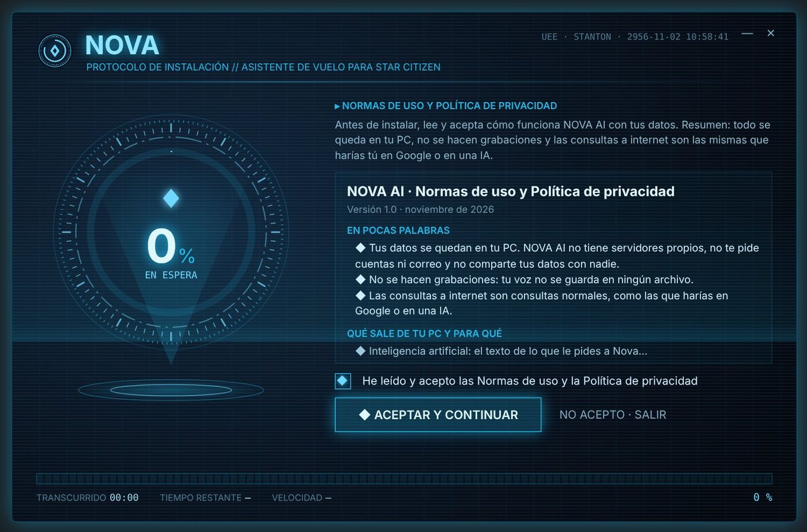
NORMAS_Y_PRIVACIDAD.md.El instalador comprueba Python, tu tarjeta gráfica, el espacio libre y la conexión. Puedes cambiar la carpeta con CAMBIAR… y elegir opciones: aceleración NVIDIA, voz sin internet (Piper), acceso directo en el escritorio e iniciar Nova al terminar. Después pulsa ◆ INICIAR SECUENCIA DE INSTALACIÓN.
Verás cada paso con su estado, el porcentaje, la velocidad de descarga y el tiempo restante. Si algo falla, aparecen los botones Reintentar y Ver registro.
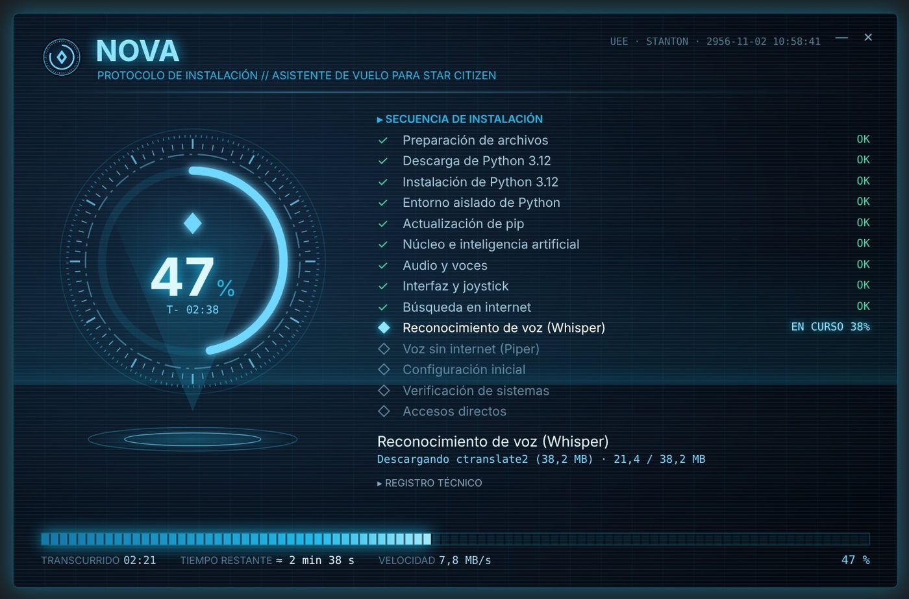
Al terminar tendrás el acceso directo NOVA AI en el escritorio y en el menú Inicio. La primera vez que la abras empezará la configuración inicial (sección 03).
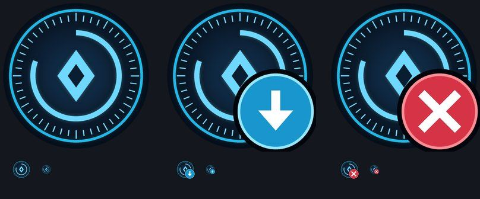
C:\Program Files\NOVA AI%LOCALAPPDATA%\NOVA AI\datosAl iniciar y al cerrar, NOVA mira en GitHub (github.com/0zzyt0/NOVA-AI) si hay una versión nueva. Si la hay, te avisa en pantalla y de viva voz:
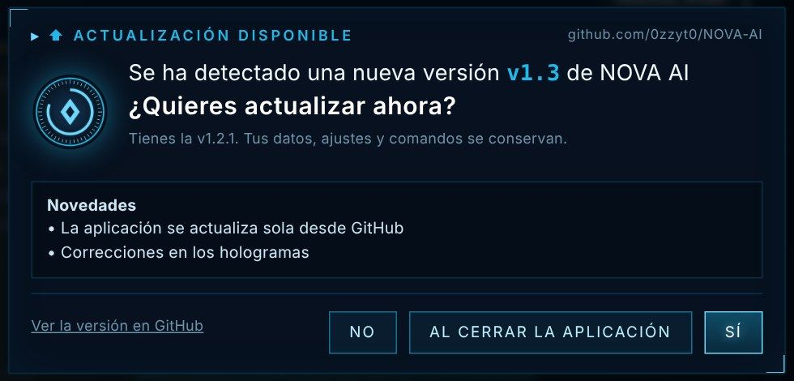
También puedes contestar por voz: «sí», «no» o «al cerrar». Si no contestas y cierras NOVA, te lo pregunta en una ventana al salir. Tus datos, ajustes y comandos se conservan siempre. Si ya aceptaste las normas de esa versión, el instalador no vuelve a pedirlas.
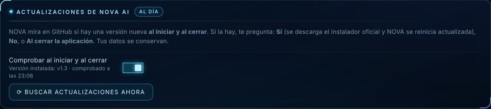
La primera vez, Nova abre un asistente de 7 pasos. Puedes responder hablando (botón del micrófono) o escribiendo. Cada respuesta se marca con un ✓ verde si te ha entendido; si sale una ✕ roja, repite.
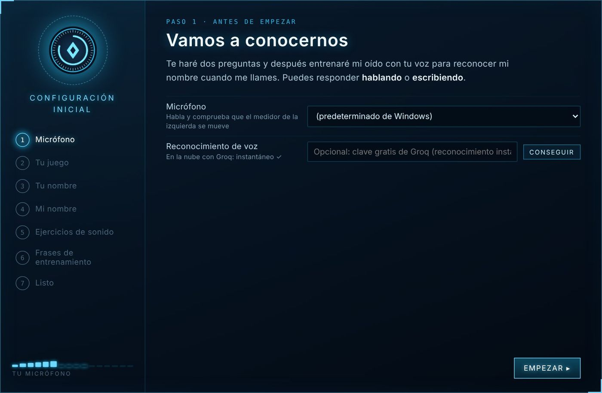
Elige tu micrófono y habla: el medidor de la izquierda debe moverse. Pega aquí tu clave de Groq si la tienes (sección 11); es opcional.
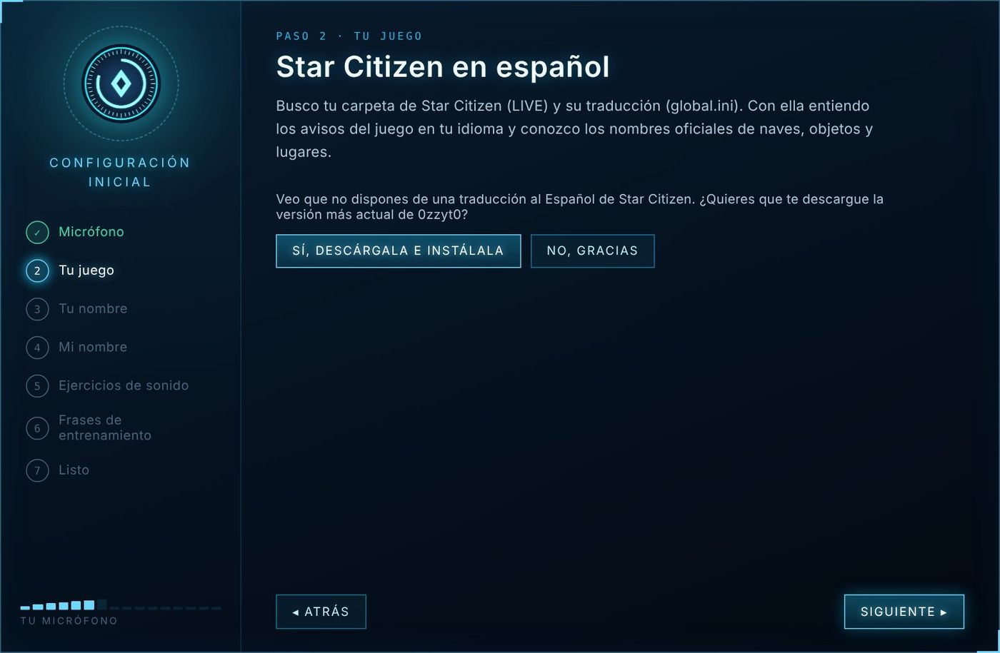
Nova busca tu carpeta LIVE de Star Citizen y su traducción. Si no tienes el juego en español, te pregunta si quieres descargar la de 0zzyt0.
¿No encuentra el juego? Pulsa Elegir carpeta y señala tu carpeta StarCitizen.
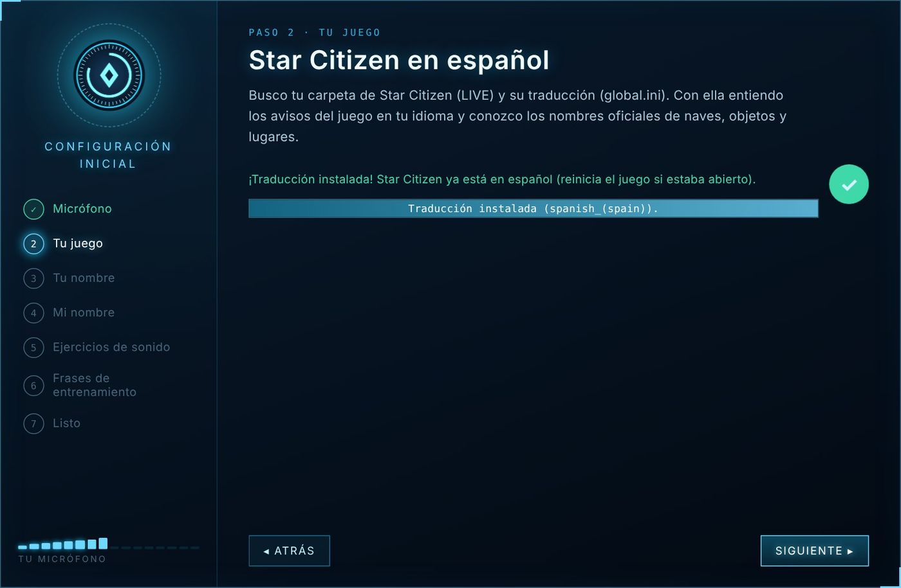
Con Sí, descárgala e instálala la descarga y la copia en LIVE, y deja tu user.cfg en español (las voces del juego siguen en inglés). Antes guarda una copia: user.cfg.nova_copia.
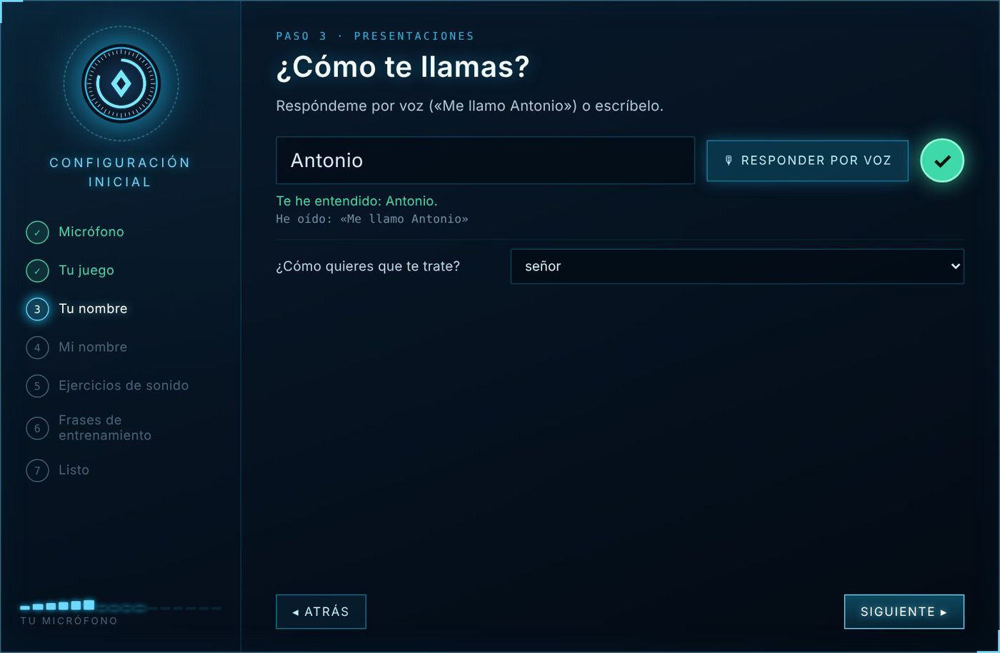
Di «Me llamo Antonio» o escríbelo, y elige cómo quieres que te trate: señor, capitán, por tu nombre…
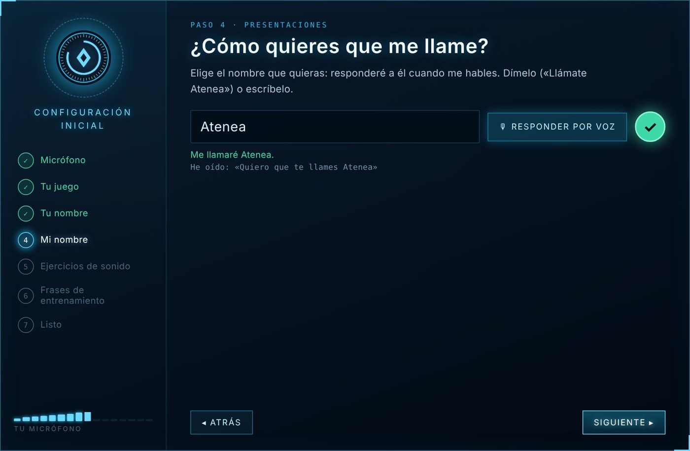
El nombre que quieras: Nova, Atenea, Jarvis… Te avisa si es demasiado corto o una palabra común, porque se activaría sin querer. Mejor de 2 o 3 sílabas.
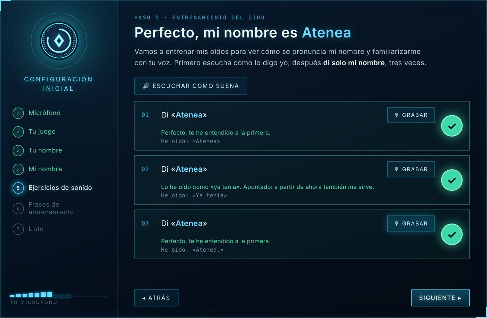
Pulsa Escuchar cómo suena y después di solo su nombre tres veces. Si el reconocimiento lo escribe distinto («Ya tenía» en vez de «Atenea»), Nova lo aprende.
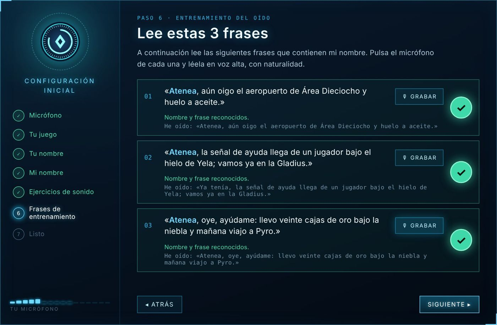
Lee en voz alta 3 frases sobre Star Citizen que empiezan por su nombre. Salen al azar: una con muchas vocales seguidas (para captar bien tu vocalización), otra con ñ, ll, y, b, v, g, j, n y m y otra que mezcla las dos. Así ajusta la sensibilidad a tu voz y al ruido de tu habitación.
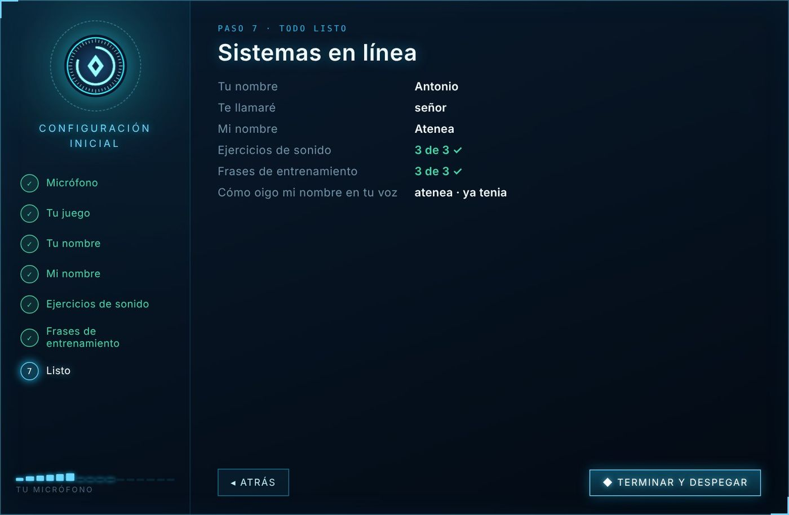
Resumen de todo. Pulsa ◆ Terminar y despegar.
Nova se abre en una ventana propia. Si la cierras, Nova se apaga: minimízala mientras juegas. Al volver a abrirla recupera la conversación, la sección y el tamaño de la ventana.
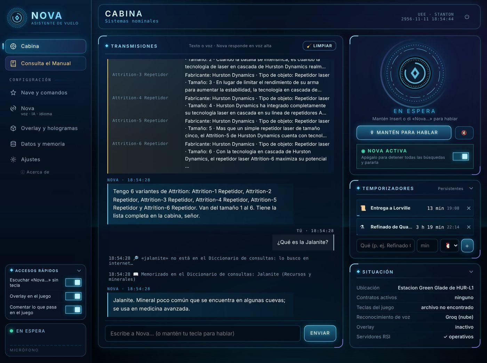
12 34 56 78 910 11Todo cabe sin barras de desplazamiento: si la ventana es baja, el holograma se encoge y Situación, Temporizadores y Accesos rápidos se pliegan solos (plegados muestran un resumen, como «2 activos»). Pulsa su cabecera para abrirlos o plegarlos; Nova lo recuerda.
| Apartado | Qué encontrarás |
|---|---|
| 📖 Consulta el Manual | Debajo de Cabina: abre este manual en tu navegador (en tu idioma). |
| Nave y comandos | Comandos de voz, lectura del juego (Game.log) y teclas, perfiles de nave y chat del juego. |
| Nova | Identidad e idioma, voz, micrófono, cómo hablarle, salida de audio, inteligencia y ahorro de tokens. |
| Overlay y hologramas | El logo de estado y los hologramas sobre el juego, sus sonidos y el nivel de efectos. |
| Datos y memoria | Páginas de consulta, Diccionario, lo que sabe de ti, bitácoras, Discord y el idioma del juego. |
| Ajustes | Idioma, actualizaciones, tus archivos, Acerca de y empezar de cero. |
La Cabina es el registro de todo lo que hablas con Nova y de sus respuestas. Debajo de cada respuesta verás qué motor de IA la ha generado (por ejemplo, vía gemini-flash-lite-latest).
Mantén Insert mientras hablas y suelta. Puedes cambiarla por cualquier tecla, botón del ratón o del HOTAS.
«Nova, baja el tren». Si solo dices «Nova», responde «¿Sí, señor?» y espera la orden.
Usa la caja de texto de la Cabina y pulsa ENVIAR. Ideal en partidas con voz en Discord.
| Tipo | Frases |
|---|---|
| Maniobras | «baja el tren» · «pide permiso para aterrizar» · «modo VTOL» · «salto cuántico» |
| Sistemas | «activa los escudos» · «energía principal» · «abre las puertas» · «luces» |
| Información del juego | «¿dónde puedo minar quantainium?» · «¿cuánto se paga el laranite?» · «planos de una pistola en Pyro» |
| Tu partida | «¿dónde estoy?» · «¿dónde dejé el personaje?» · «¿quién ha entrado en la nave?» |
| Memoria | «recuerda que mi nave favorita es la Cutlass» · «olvida lo de la Cutlass» |
| Jugadores y planetas | «búscame a un jugador» · «háblame de Daymar» · «¿qué es Security Post Kareah?» |
| Temporizadores | «avísame en 3 horas y 20 minutos, el refinado de ARC-L1» · «¿qué temporizadores tengo?» |
| Comercio y servidores | «¿qué ruta me da más con 100.000 aUEC?» · «¿cómo están los servidores?» |
| Combate y estadísticas | «fija el objetivo» (queda en la bitácora) · «¿cuántas bajas llevo este mes?» |
| Control de Nova | «Nova, detente» o «desactívate» (la detiene) · «Nova, actívate» · «silencio» o «para» (se calla) |
| Sobre Nova | «¿Quién eres?» · «Preséntate» · «¿Para qué sirves?» · «Abre el manual» |
| Chat del juego | «Nova, envía mensaje al chat: ¿alguien necesita escolta?» (lo traduce al inglés y lo escribe) |
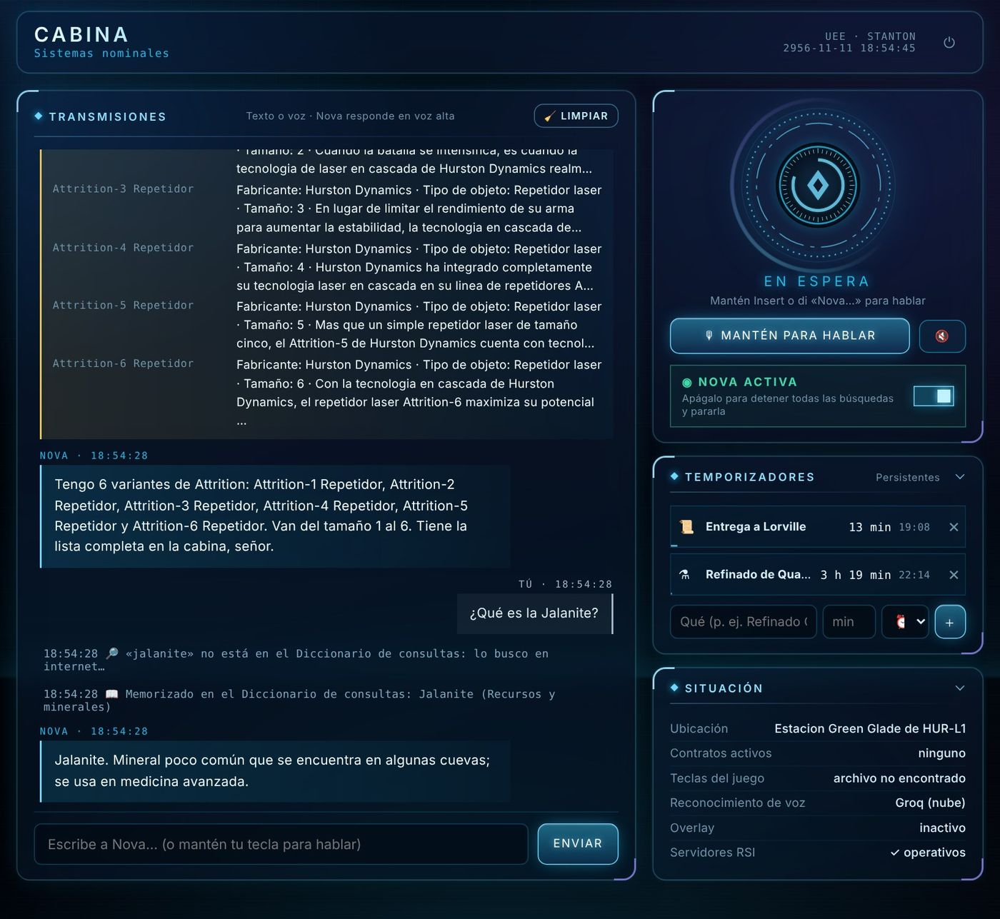
90, 1:30 o 2h30) y pulsa ＋.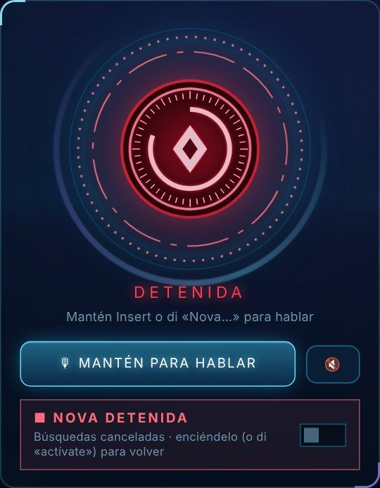
Dónde estás, tus contratos activos, el overlay y Servidores RSI: al arrancar NOVA mira status.robertsspaceindustries.com y te avisa si hay caídas o mantenimiento.
Nebula_Rider) y pulsa Enter. Si lo escribes de una vez («búscame al jugador Nebula_Rider») se salta el paso 2.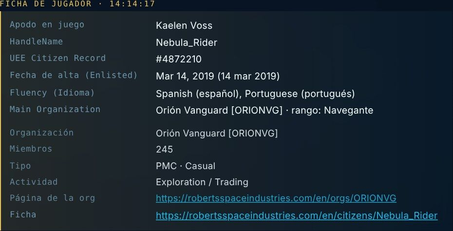
Nova lee su ficha pública en robertsspaceindustries.com: Apodo en juego, HandleName, UEE Citizen Record, Fecha de alta, Idiomas y Organización principal, y después la página de esa organización (miembros, tipo, actividad). Además aparece su ficha policial en holograma sobre el juego (sección 08).
Si algún dato está oculto (RSI lo muestra como [REDACTED]), Nova te avisa de que esa información está oculta.
Cada búsqueda queda en Datos y memoria › Bitácora y estadísticas, archivo Busquedas_de_jugadores.log: fecha · hora · jugador · organización.
Con un webhook en Datos y memoria › Discord y servidores, cada ficha se manda sola a ese canal (los objetivos de recompensa, en rojo). La Cabina te dice si llegó.
Al aceptar una misión de cazarrecompensas o JcJ (o cuando sale «Objetivo nuevo: Neutralizar XX»), Nova busca a XX en RSI automáticamente. Si tiene ficha es un jugador: suena una alerta y su ficha sale en rojo con el sello «OBJETIVO DE CAZA». Si no la tiene, te dice que es un piloto NPC. Ambos casos quedan en la bitácora de búsquedas.
Todo lo que tiene que ver con Star Citizen: lo que Nova lee del juego y te comenta en voz, tus teclas y los comandos de voz que pulsan teclas por ti.
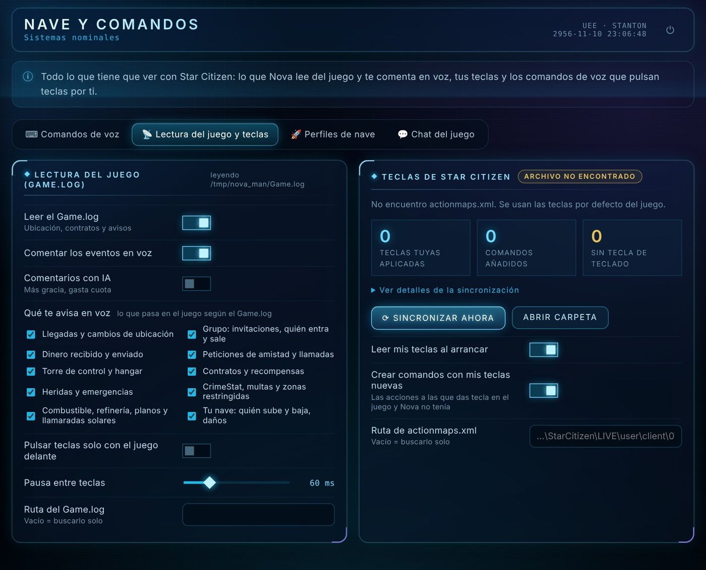
actionmaps.xml al arrancar y usa tus propias teclas.La lista de comandos agrupados por categoría (despegue y aterrizaje, energía y sistemas, armas, minería…). Cada uno muestra sus frases y sus teclas. Puedes buscarlos por nombre, frase o tecla.
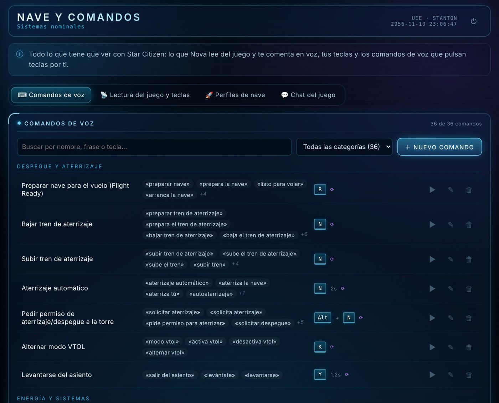
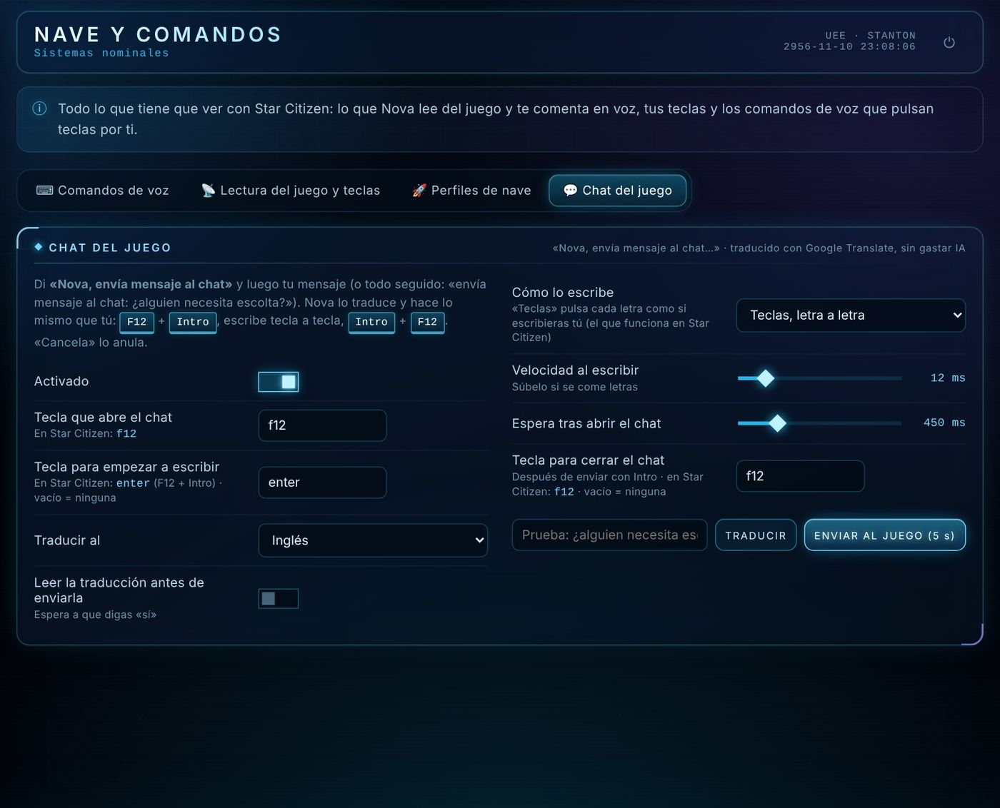
Solo en estas naves limita un comando a ciertas naves (y permite la misma frase con teclas distintas en cada una). Anotarlo en la bitácora lo apunta con la nave y el lugar, como «fija el objetivo».
comandos_personales.json): las actualizaciones no los borran. ↺ restaura un comando de fábrica.Cada nave puede tener sus propios avisos en voz: por ejemplo, en la MOLE sin avisos de grupo ni de dinero. Nova sabe en qué nave vas por el Game.log. Escribe o elige la nave, pulsa ＋ CREAR PERFIL y marca lo que quieres oír en ella; en amarillo, lo que cambia respecto a los avisos generales. El perfil de la nave en la que vas se marca como EN USO.
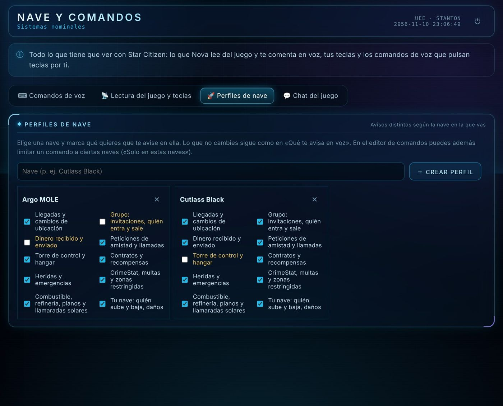
El Game.log no anota cuándo fijas un objetivo («tarjetear» a un enemigo). Si se lo pides por voz («Nova, fija el objetivo», «marca el objetivo»), Nova pulsa la tecla y lo anota en la bitácora (etiqueta OBJETIVO) con la nave y el lugar.
«Nova, ¿qué ruta me da más con 100.000 aUEC?»: con los precios de UEX calcula cuántas SCU comprar según la bodega de la nave en la que vas (o la que digas), el stock del origen, la demanda del destino y tu dinero, y ordena por beneficio real. Si no sabe tu nave usa la Bodega por defecto de Datos y memoria.
Escribe en el chat de Star Citizen sin soltar los mandos, y en inglés aunque le hables en español:
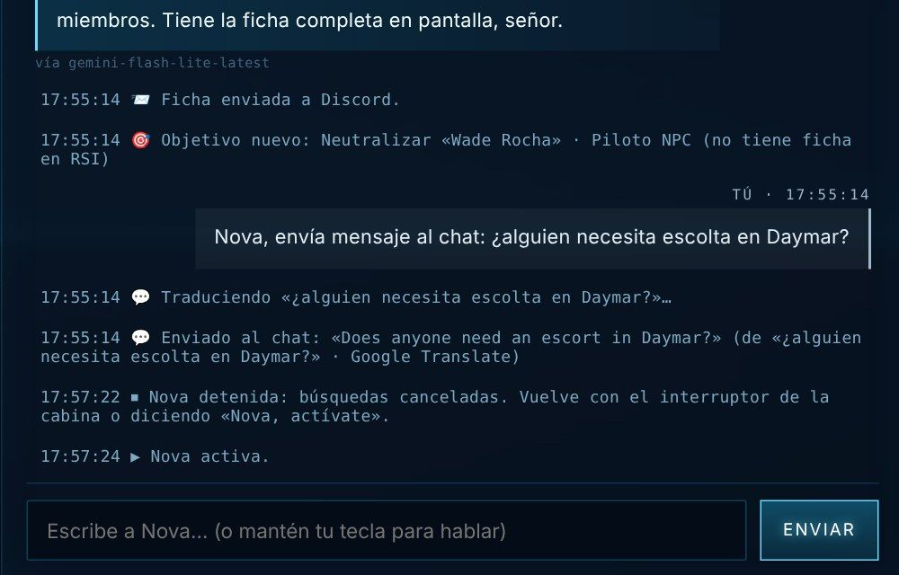
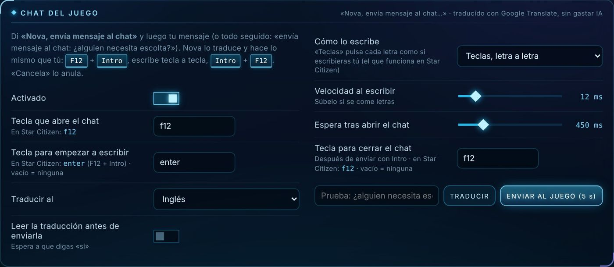
Escribe un mensaje y pulsa TRADUCIR para ver la traducción, o ENVIAR AL JUEGO (5 s) y vuelve a Star Citizen: se escribe a los 5 segundos. «Cancela» anula un mensaje pendiente. Cada mensaje queda en la bitácora (etiqueta CHAT).
En Nova está todo sobre ella, en pestañas: Identidad e idioma, Voz, Micrófono, Cómo hablarle, Salida de audio, Inteligencia y Ahorro de tokens. Empezamos por cómo suena. Todas las voces son gratis: las de Edge son las más naturales y las de Piper funcionan sin internet.
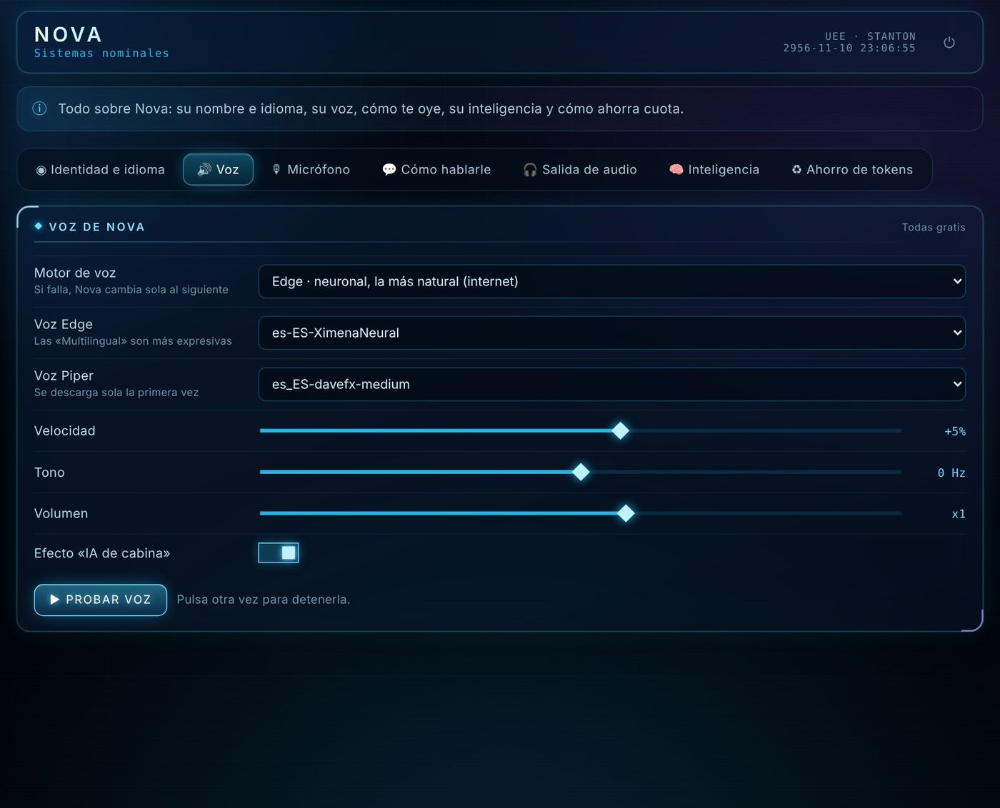
| Motor | Cómo es | Internet |
|---|---|---|
| Edge | Voces neuronales de Microsoft, muy naturales. La lista muestra solo las de tu idioma; las Multilingual son más expresivas. | Sí |
| Piper | Buena calidad y sin conexión. La voz se descarga sola la primera vez. | No |
| Windows | La voz del sistema, como último recurso. | No |
Cómo te comunicas con Nova: las pestañas Micrófono y Cómo hablarle.
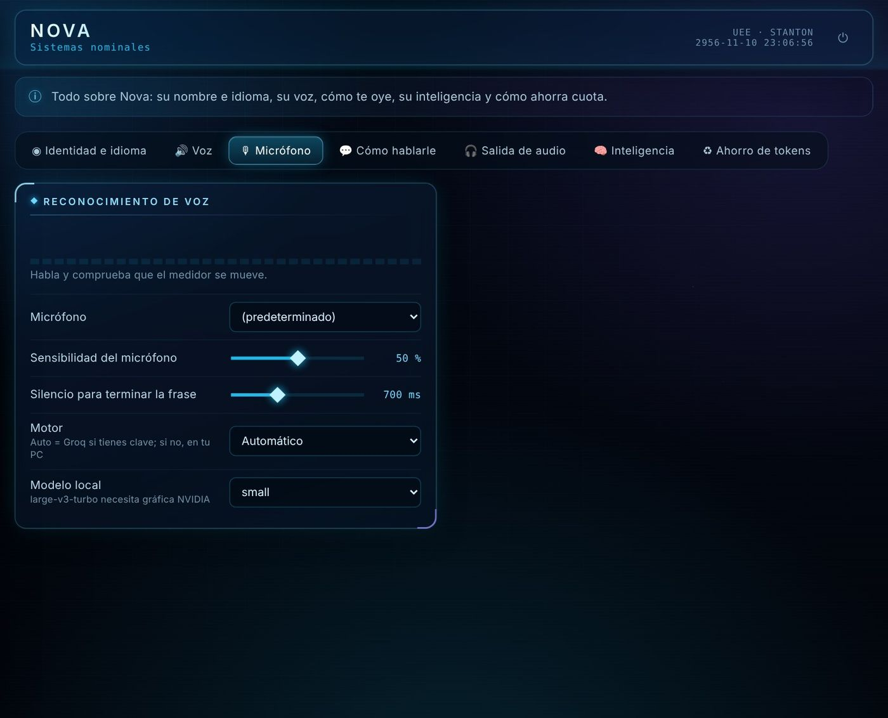
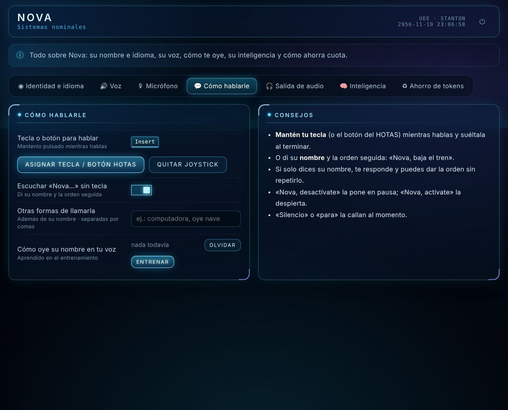
small sin NVIDIA; large-v3-turbo con NVIDIA.El cerebro de Nova: su nombre y el tuyo, las claves de los motores de IA, el orden en que los usa y su personalidad.
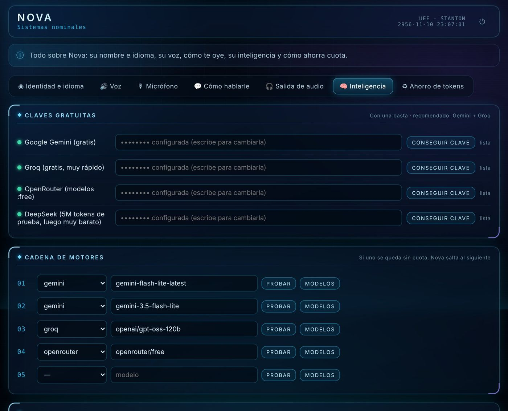
Nombre de la IA, tu nombre y cómo te llama. Si le cambias el nombre, repite el entrenamiento con ◆ Repetir configuración para que lo reconozca en tu voz.
Pega aquí tus claves (sección 11). Si tu instalador trae claves de prueba, ya estarán puestas. Un punto verde indica que hay clave. Para poner la tuya, haz clic en el campo y pégala encima (sección 11).
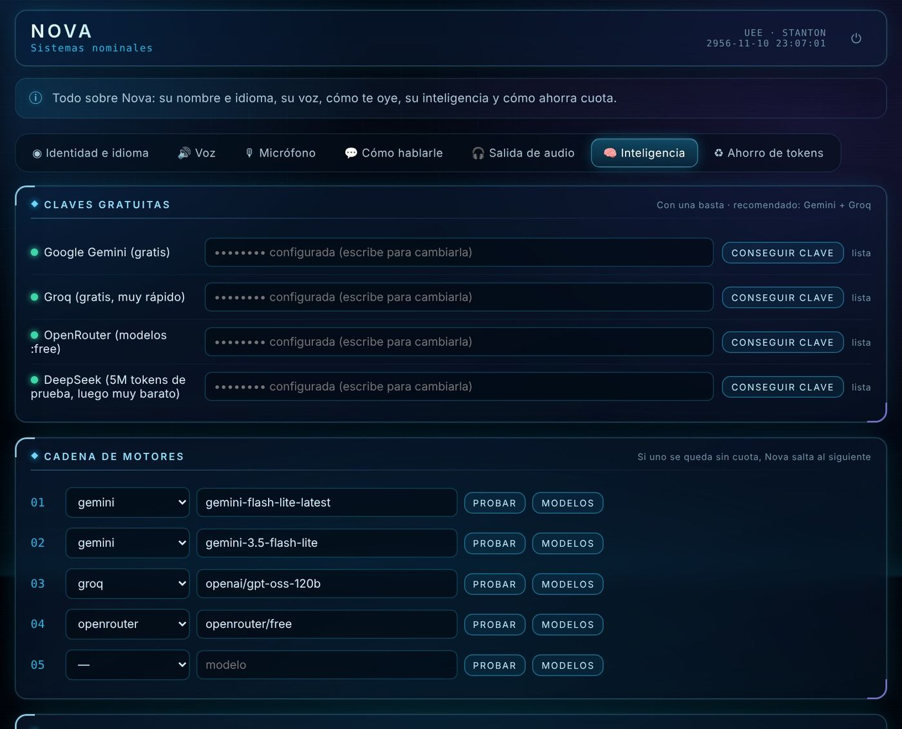
Nova prueba los motores en orden: si uno se queda sin cuota o falla, salta al siguiente sin que lo notes. El orden de fábrica es:
| # | Proveedor | Modelo |
|---|---|---|
| 01 | Gemini | gemini-flash-lite-latest · rápido, muchas peticiones gratis |
| 02 | Gemini | gemini-3.5-flash-lite |
| 03 | Groq | openai/gpt-oss-120b · respaldo ultrarrápido |
| 04 | OpenRouter | openrouter/free · modelos gratuitos variados |
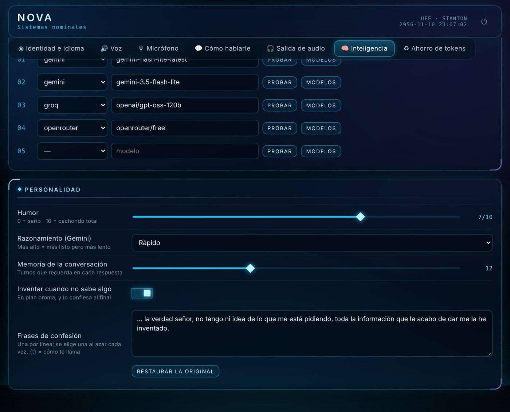
| Ajuste | Para qué sirve |
|---|---|
| Humor | De 0 (serio) a 10 (cachondo total). |
| Razonamiento (Gemini) | Más alto = más listo pero más lento. «Rápido» es lo ideal en vuelo. |
| Memoria de la conversación | Cuántos turnos anteriores recuerda en cada respuesta. |
| Inventar cuando no sabe algo | Activado: se inventa la respuesta con gracia y lo confiesa al final. Desactivado: te dice con humor que no lo sabe. |
| Frases de confesión | Una por línea; elige una al azar. {t} se cambia por cómo te llama. Restaurar la original vuelve a la de fábrica. |
Las claves gratuitas tienen un límite diario. Nova contesta sin la IA todo lo que puede:
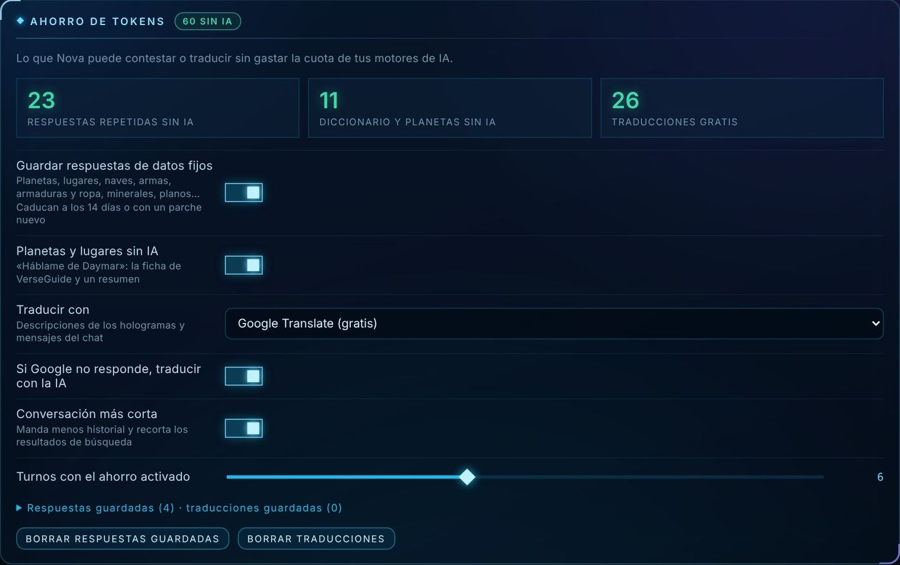
Si la IA contesta usando solo datos que no cambian (naves, armas, armaduras y ropa, componentes, minerales, planos, planetas…), la respuesta se guarda. La próxima vez que preguntes lo mismo («¿qué es la Cutlass Black?» o «háblame de la Cutlass Black») Nova la repite sin gastar nada. Caducan a los 14 días o cuando cambia el parche. Nunca se guardan precios, rutas, tu partida ni preguntas que dependen de la conversación.
«Háblame de Daymar», «¿qué es Security Post Kareah?»: Nova saca la ficha de VerseGuide, la enseña en holograma y te hace un resumen hablado.
Las descripciones de los hologramas y los mensajes del chat se traducen con Google Translate. Solo si Google no responde se usa la IA (puedes desactivarlo). Lo traducido se guarda y no se vuelve a pedir.
Manda menos historial a la IA (6 turnos por defecto), recorta las respuestas largas y los resultados de búsqueda. Contadores, lista de respuestas guardadas y botones para borrarlas.
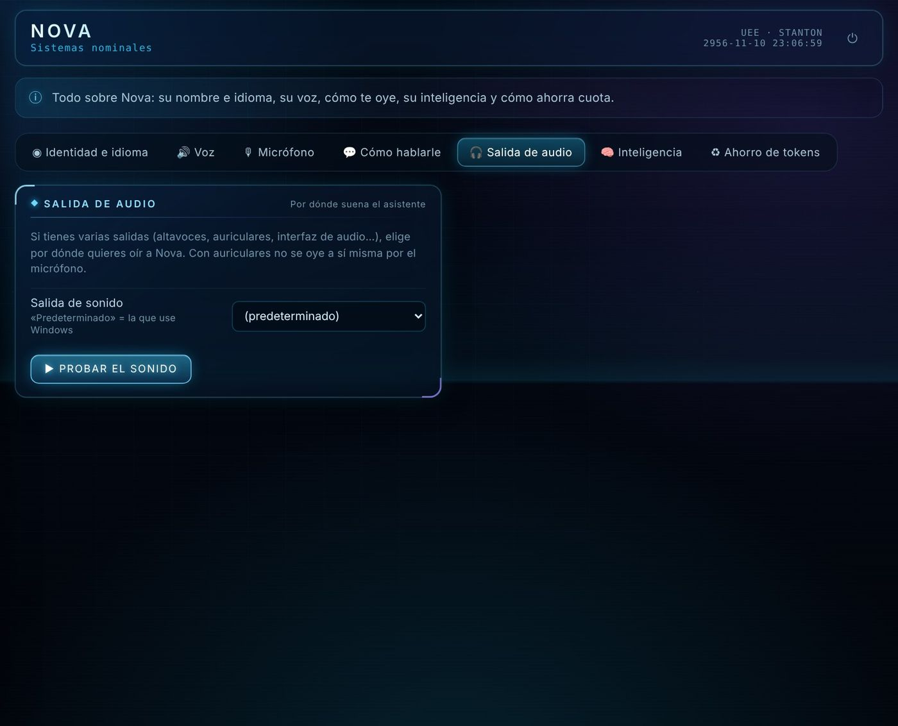
Si tienes varias salidas (altavoces, auriculares, interfaz de audio USB…), elige por dónde quieres oír a Nova. Predeterminado usa la de Windows.
▶ Probar el sonido para comprobarlo.
Todo lo que NOVA dibuja encima del juego: el logo de estado y los hologramas de información, cada uno en su pestaña. Arriba eliges el nivel de efectos (capítulo 10).
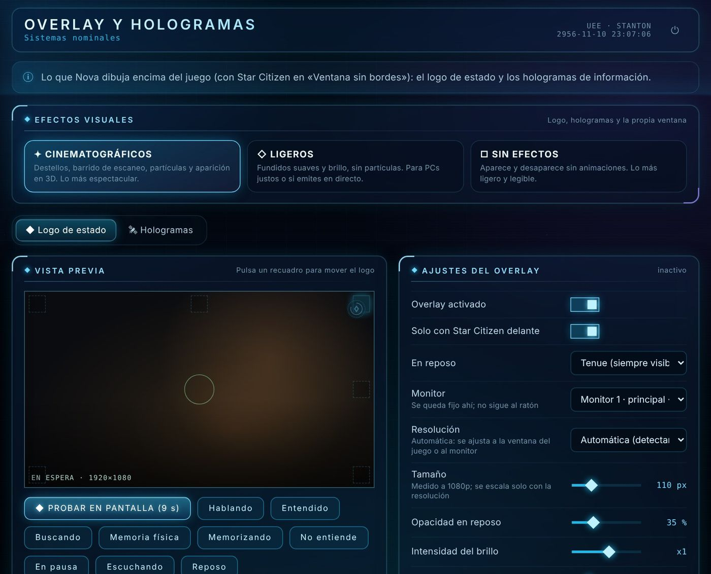
Fichas en holograma encima del juego. Aparecen como una proyección (una línea de luz que se abre con un sonido de encendido), tienen líneas de barrido mientras están en pantalla y se pliegan al irse con un sonido de apagado.
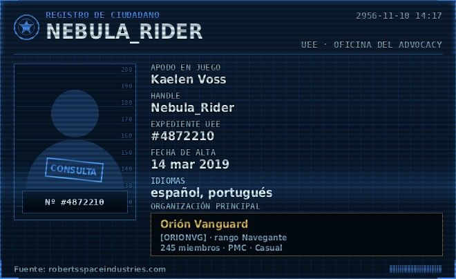
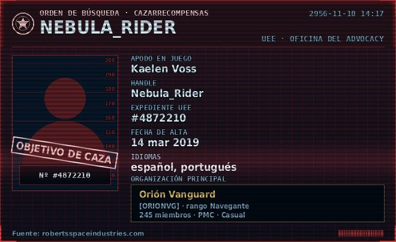
Al buscar un jugador: foto de perfil, apodo, handle, expediente, fecha de alta, idiomas y la organización con su logotipo. Lo que el jugador oculta sale como REDACTED.
Si el objetivo de una recompensa o misión JcJ es un jugador, suena una alerta de dos tonos antes de que se abra la ficha, en rojo y con el sello OBJETIVO DE CAZA. Si es un piloto NPC, solo te lo dice.
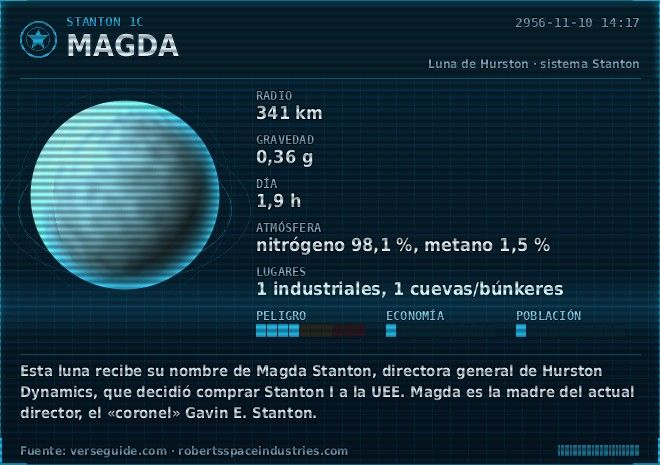
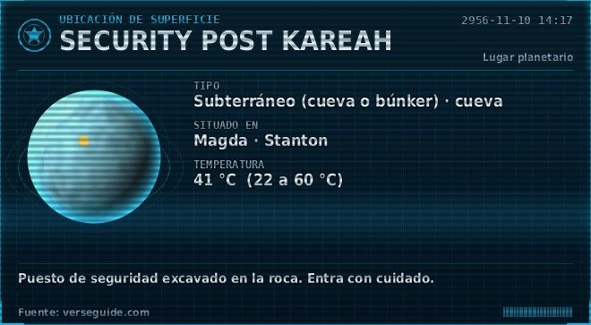
«Nova, háblame de Daymar». Datos de verseguide.com: tipo, radio, gravedad, duración del día, atmósfera, peligro, economía, población, sus lugares y una descripción en español.
Cuevas, puestos, bases, búnkeres: «¿qué es Security Post Kareah?» → tipo, dónde está, temperatura y descripción en español.
Al llegar: cuando el Game.log indica que te acercas a un planeta o luna, o que llegas a uno de sus lugares, la ficha aparece sola (como mucho una vez cada media hora para el mismo sitio).
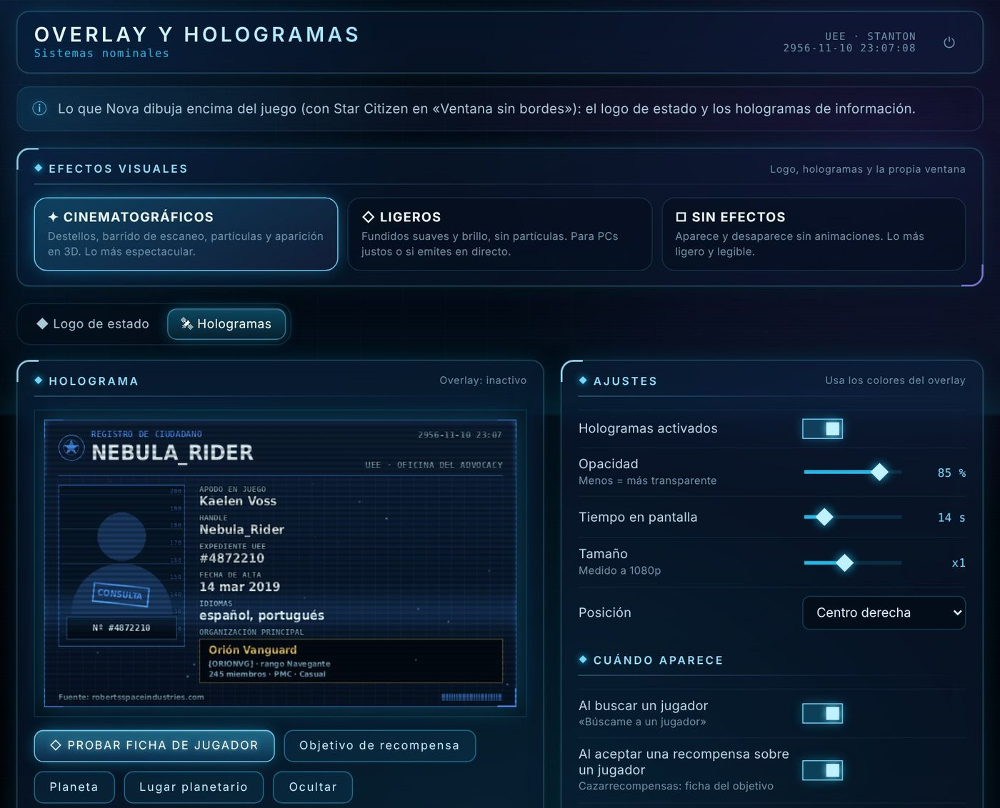
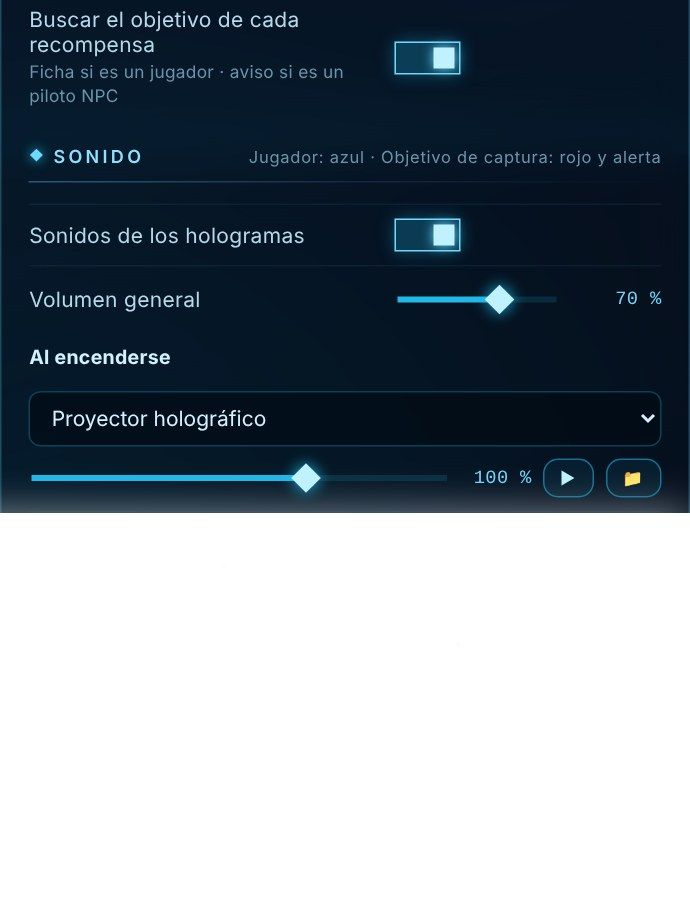
Cada holograma suena al encenderse y al apagarse, y los objetivos de captura llevan una alerta antes de abrirse. Para cada uno de los tres momentos eliges:
| Momento | Sonidos de la lista |
|---|---|
| Al encenderse | Proyector holográfico · Pulso digital · Escáner · Campanilla · Arranque de motor |
| Al apagarse | Proyector holográfico · Pulso digital · Desconexión · Campanilla · Apagado de motor |
| Alerta de captura | Sirena de dos tonos · Klaxon · Pitidos rápidos · Alarma de proximidad · Campana de combate |
De dónde saca Nova la información del juego. Al arrancar comprueba si hay datos nuevos de tu parche, antes de activar nada.
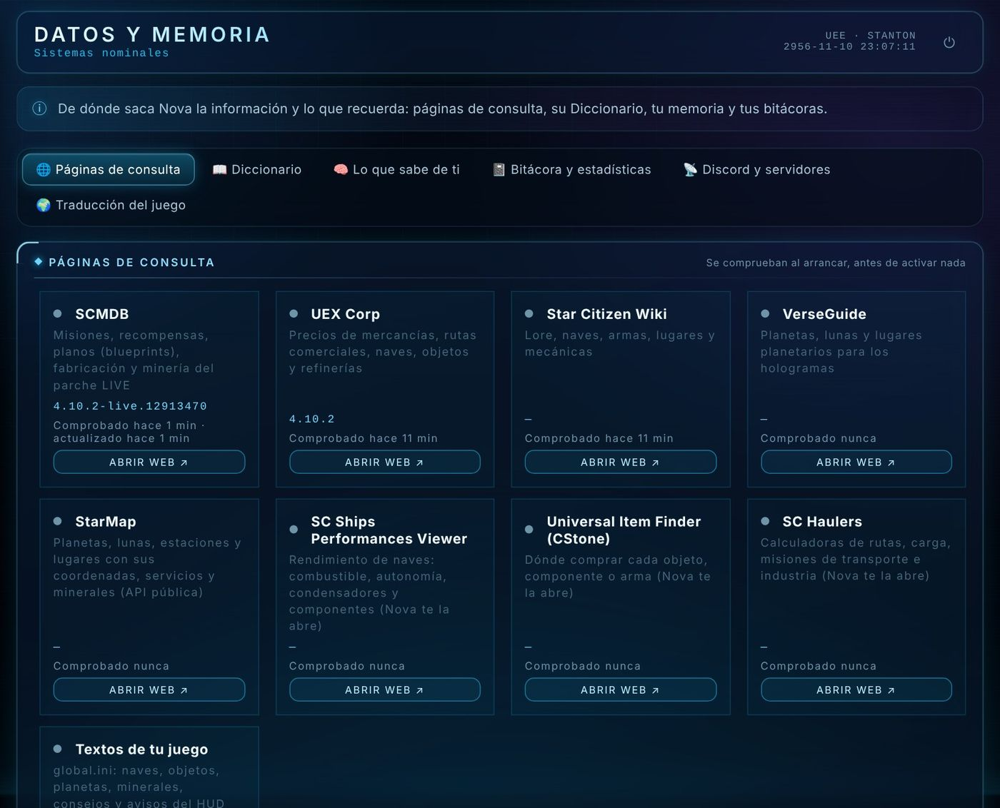
| Fuente | Qué aporta |
|---|---|
| SCMDB | Misiones, recompensas, planos (blueprints), fabricación y minería del parche LIVE. |
| UEX Corp | Precios de mercancías, rutas comerciales, naves, objetos y refinerías. |
| Star Citizen Wiki | Lore, naves, armas, lugares y mecánicas. |
| Textos de tu juego | El global.ini: nombres oficiales y avisos del HUD en tu idioma. |
| RSI | Fichas públicas de jugadores y organizaciones, y el estado de los servidores. |
| VerseGuide | Planetas, lunas y lugares planetarios para los hologramas. |
| StarMap | Planetas, estaciones y lugares: gravedad, temperatura, coordenadas, servicios (enfermería, plataformas) y minerales. |
Páginas que Nova te abre en el navegador cuando son la mejor fuente (díselo: «abre el buscador de objetos»): Universal Item Finder (finder.cstone.space, dónde comprar cada objeto), SC Ships Performances Viewer (spviewer.eu, rendimiento de naves) y SC Haulers (schaulers.com, calculadoras de carga y rutas).
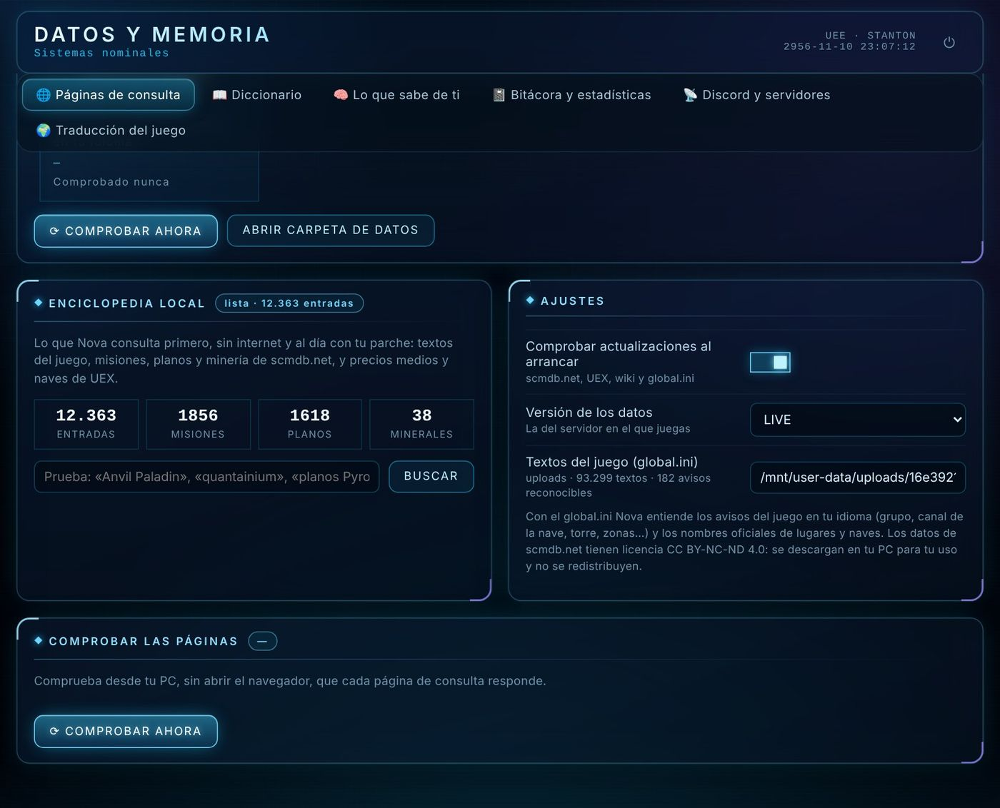
LIVE.Nova te pregunta «¿Comprobar y reinstalar?»:
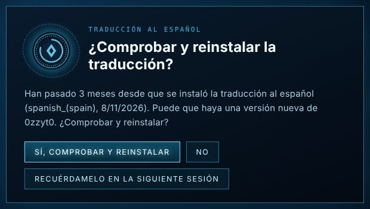
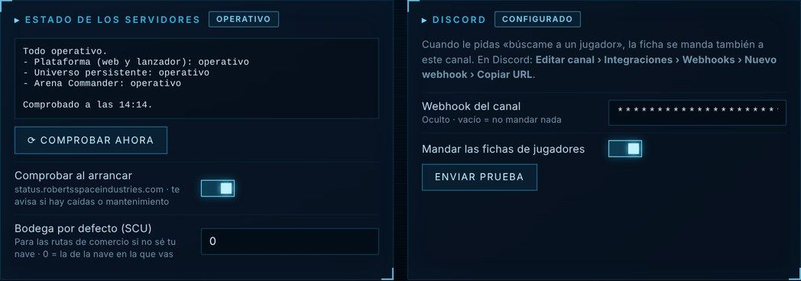
Al arrancar NOVA mira status.robertsspaceindustries.com y te avisa si hay caídas o mantenimiento. Comprobar ahora lo vuelve a mirar. Pregúntale «¿cómo están los servidores?».
Pega el webhook de un canal (Discord: Editar canal › Integraciones › Webhooks): cada ficha que busques se manda sola, con foto y logotipo, y también los objetivos de recompensa (en rojo). Enviar ficha de prueba manda una de ejemplo y abajo ves el resultado del último envío.
Las SCU que usa Nova para calcular rutas de comercio cuando no sabe en qué nave vas.
Aquí activas o desactivas la comprobación de versiones nuevas al iniciar y al cerrar, y puedes buscar una a mano con Buscar actualizaciones ahora. Cómo funciona la actualización: sección 02.
Lo que Nova guarda de ti, en tres pestañas: Lo que el asistente sabe de ti, Archivos y Archivos de bitácora.
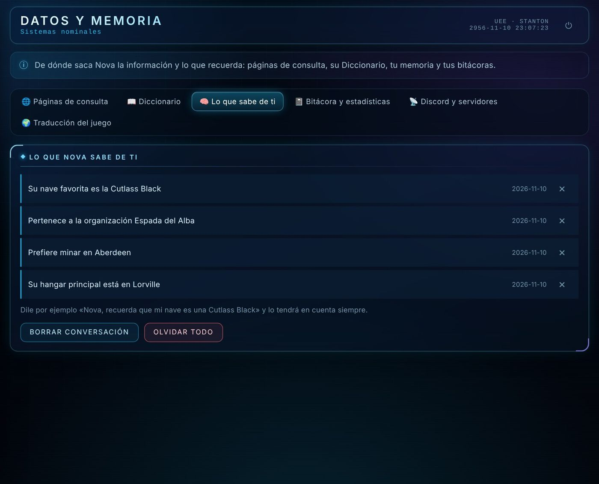
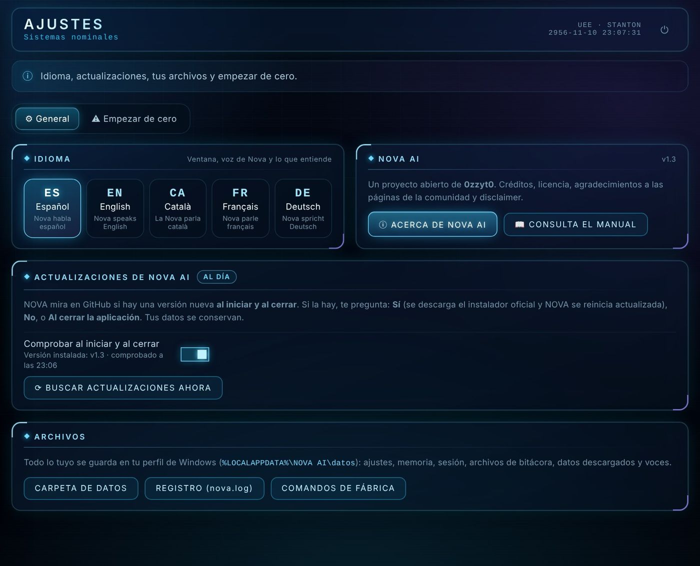
Todo lo tuyo vive en %LOCALAPPDATA%\NOVA AI\datos. Tres botones:
Cada sesión de juego queda apuntada en un archivo .log que puedes abrir con el Bloc de notas (se guardan las 60 últimas). Sale del propio Game.log: si abres Nova con la partida empezada o después de jugar, rehace la bitácora completa.
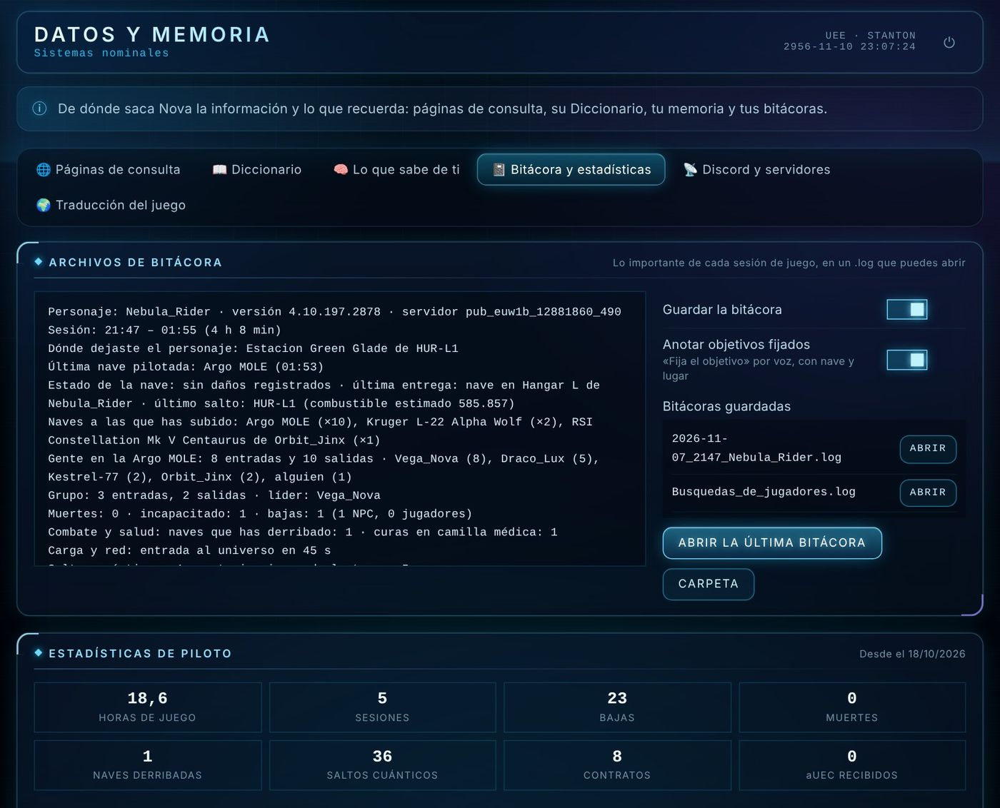
| Etiqueta | Qué anota |
|---|---|
| COMBATE | Bajas de NPC y jugadores (arma y causa) y naves que destruyes o inutilizas. |
| MUERTE · MUERTES | Tus muertes (quién, con qué, causa), las de otros y el punto de reaparición. |
| SALUD | Heridas, incapacitaciones con su causa y curas en camilla médica. |
| CARGA · RED | Conexión, aparición, tiempo de carga, cargas atascadas y tirones de red. |
| NAVE · GRUPO · TORRE… | Subir y bajar de naves, quién entra en la tuya, grupo, hangar, contratos, dinero, planos. |
Cada jugador que buscas (o que Nova busca por una recompensa) se apunta en Busquedas_de_jugadores.log, en la misma carpeta de bitácoras. Es un archivo único que no se borra con las sesiones antiguas:
Si hay una partida en marcha, la búsqueda también queda en la bitácora de esa sesión (etiqueta JUGADOR u OBJETIVO).
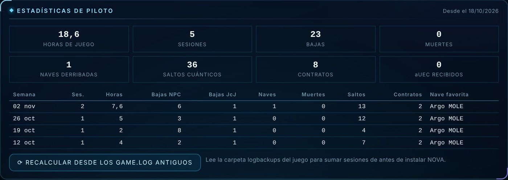
Horas, bajas, muertes, saltos y contratos de todas tus sesiones, semana a semana. Recalcular lee los Game.log antiguos del juego (logbackups) para sumar lo que jugaste antes de instalar Nova. Pregúntale «¿cuántas bajas llevo este mes?».
La memoria física de Nova: Diccionario_de_consultas.txt, en tu carpeta de datos. Ordenado por grupos (planetas y lunas, estaciones, ciudades, lugares, naves y vehículos, armaduras, armas personales y de nave, componentes, recursos y minerales, mercancías, ropa, pinturas, fabricantes…) y dentro de cada uno por orden alfabético. Las variantes van juntas bajo su familia, porque no son lo mismo: Attrition-1 es de tamaño 1 y Attrition-5 de tamaño 5.
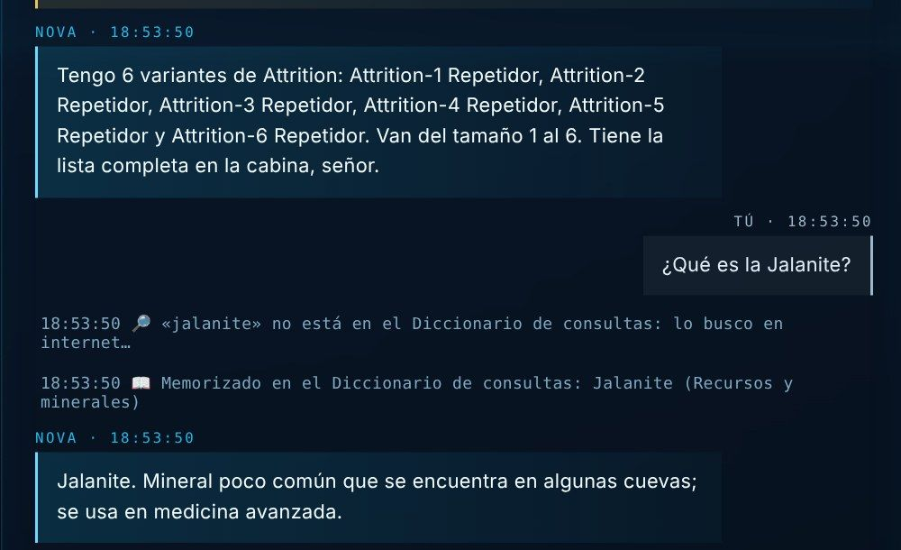
Si no existe (primera instalación), Nova lo crea, te avisa y lo rellena con los textos oficiales del juego en español (el global.ini de la traducción): unas 7.000 entradas, sin gastar nada. Cada entrada lleva el parche, la fecha y su origen (juego, internet o IA).
Se conserva entre versiones, al actualizar y al «empezar de cero», y el desinstalador no lo borra. Con un parche o traducción nuevos, lo que viene del juego se actualiza solo. «Nova, actualiza la ficha de X» la vuelve a buscar.
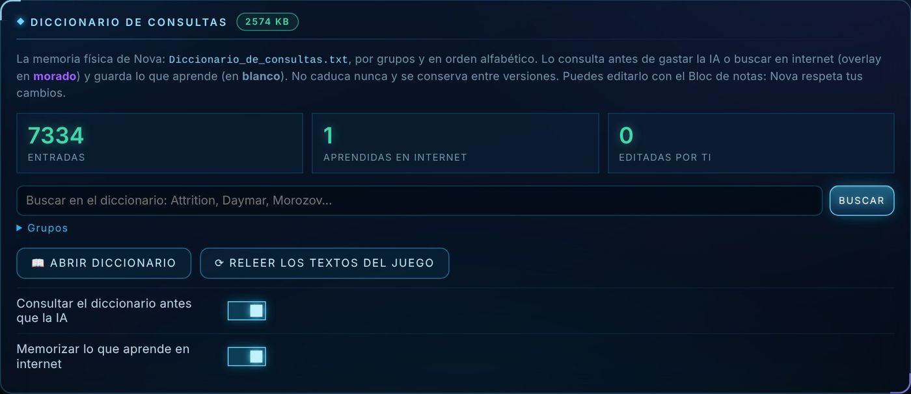
* Nombre: definición). Nova usa tu texto y no lo vuelve a sobrescribir. Buscar te enseña lo que sabe de algo sin preguntárselo.En Ajustes tienes el idioma, las actualizaciones, tus archivos, Acerca de y empezar de cero. Desde la versión 1.3, NOVA AI habla cinco idiomas: español, inglés, catalán, francés y alemán.
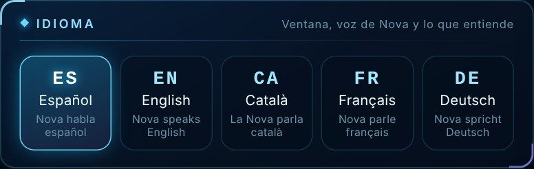
Pulsa la tarjeta de tu idioma. La ventana se recarga y cambia todo: los textos, la voz de Nova, lo que entiende, sus comandos de voz, los hologramas y este manual. También se elige en la primera pantalla del instalador, que propone el de Windows.
Nova te trata siempre de forma formal: señor, sir, senyor, monsieur, Herr… (lo cambias en Nova › Identidad e idioma › Cómo te llama).
| Idioma | «¿Dónde compro un P4-AR?» | «Baja el tren» |
|---|---|---|
| English | «Where can I buy a P4-AR?» | «Lower the landing gear» |
| Català | «On puc comprar un P4-AR?» | «Baixa el tren» |
| Français | «Où puis-je acheter un P4-AR ?» | «Sors le train» |
| Deutsch | «Wo kann ich ein P4-AR kaufen?» | «Fahrwerk ausfahren» |
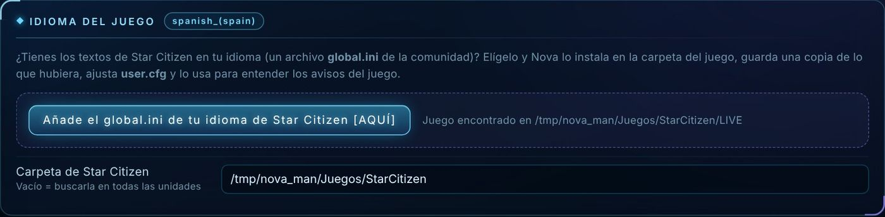
LIVE\data\Localization\<idioma>\global.ini.global.ini.antes_de_nova), pone g_language en user.cfg y lo usa para entender los avisos del juego en tu idioma.spanish_(latin_america).Destellos, barrido de escaneo, aberración cromática al proyectarse, motas de luz y un anillo que gira alrededor del logo.
Fundidos suaves y brillo, sin partículas ni parpadeos. Para PCs justos o si emites en directo.
Aparece y desaparece al instante, sin animaciones. Lo más ligero y legible.
Comprueba desde tu PC, sin abrir el navegador, que responde cada página que usa Nova (UEX, wiki, scmdb, VerseGuide, StarMap, spviewer, CStone, SC Haulers, RSI…). Verde: responde · amarillo: lenta · rojo: sin respuesta.
Ajustes › General › Archivos abre tu carpeta de datos, el registro (nova.log) y los comandos de fábrica. Ajustes › Empezar de cero borra lo que Nova ha aprendido de ti y vuelve a la configuración inicial.
Una API Key (clave) es como una contraseña que deja a Nova usar un servicio de inteligencia artificial en tu nombre. Algunas versiones de NOVA AI traen claves de prueba (la de GitHub no), pero tienen un límite diario compartido por todos los que usan el programa. Con las tuyas tendrás todo el cupo para ti. Son gratis y se consiguen en un par de minutos.
| Servicio | Para qué | Coste | Empieza por |
|---|---|---|---|
| Gemini | El cerebro principal de Nova. | Gratis, sin tarjeta | AIza… o AQ.… |
| Groq | Respaldo ultrarrápido y reconocimiento de voz en la nube. | Gratis, sin tarjeta | gsk_… |
| OpenRouter | Muchos modelos gratuitos como respaldo. | Gratis (50 peticiones/día) | sk-or-v1-… |
| DeepSeek | Muy listo y muy barato. | De pago (saldo previo) | sk-… |
El botón CONSEGUIR CLAVE de cada servicio abre directamente su página de claves.
Google indica que en el plan gratuito puede usar lo que envías para mejorar sus productos.
gsk_…): solo se muestra una vez.gpt-oss-120bCon Groq además tendrás el reconocimiento de voz más rápido (motor «Automático» en Nova › Micrófono).
sk-or-v1-…) antes de cerrar la ventana.Usa los modelos acabados en :free o openrouter/free, que elige uno gratuito disponible.
sk-…): no se vuelve a mostrar.deepseek-v4-flash).| Si… | Prueba esto |
|---|---|
| No me oye | Elige tu micrófono en Nova › Micrófono y mira el medidor. Sube la sensibilidad si hablas bajo. |
| Se activa sola | Baja la sensibilidad o desactiva «Escuchar sin tecla». Si es una forma aprendida del nombre, quítala con Olvidar. |
| No reacciona a su nombre | Repite el entrenamiento en Nova › Identidad e idioma. Elige un nombre de 2 o 3 sílabas que no sea una palabra común. |
| El juego no recibe las teclas | Si ejecutas Star Citizen como administrador, ejecuta Nova también como administrador. Activa «Pulsar teclas solo con el juego delante». |
| Una tecla no funciona | ⟳ Sincronizar ahora y revisa «Ver detalles». Si la acción solo está en tu HOTAS, dale también una tecla de teclado. |
| «Todos mis motores están sin cuota» | Pon tus propias claves (sección 11) o espera al día siguiente. |
| Nova se oye a sí misma | Usa auriculares. El micrófono ya se queda sordo mientras Nova habla. |
| El overlay no se ve | Pon el juego en «Ventana sin bordes». Prueba con «◆ Probar en pantalla» y revisa el monitor elegido. |
| El holograma no se ve o no suena | Igual que el overlay: «Ventana sin bordes». Comprueba Hologramas activados y pulsa Probar. Para el sonido: Sonidos de los hologramas, su volumen y la Salida de audio. |
| La descripción del holograma sale en inglés | Activa Traducir las descripciones y comprueba que tienes un motor de IA con cuota (sección 09). Se traduce la próxima vez. |
| Un jugador sale como piloto NPC | RSI no tiene ficha con ese nombre (o no se pudo consultar). Búscalo a mano: «búscame a un jugador». |
| La actualización no se instala | Acepta el permiso de Windows (UAC). Si falla, descarga el instalador de GitHub (Releases) y ejecútalo: conserva tus datos. |
| El mensaje no se escribe en el chat | En Nave y comandos › Chat del juego: teclas f12 / enter / f12 y «Teclas, letra a letra». Si se come letras, sube la velocidad al escribir o la espera. |
| La ficha no llega a Discord | Mira el mensaje de la Cabina o «Último envío» en Datos y memoria › Discord y servidores: dice qué respondió Discord. Si el webhook no existe, crea uno nuevo y pégalo. Enviar ficha de prueba lo comprueba. |
| Una definición está mal o anticuada | Di «Nova, actualiza la ficha de X» o corrígela tú en el Diccionario de consultas (Ajustes › Archivos). |
| Nova no responde a nada | Puede estar detenida (overlay en rojo): enciende el interruptor de la Cabina o di «Nova, actívate». |
| La traducción no aparece | Reinicia el juego. Comprueba la carpeta en Datos y memoria y pulsa ⬇ Actualizar traducción. |
| La ventana no se abre | Nova usa Edge. Si no lo tienes, abre la dirección de ui_puerto.txt (carpeta de datos) en tu navegador. |
| Se cierra al arrancar | NOVA AI.exe te enseña el error. Para más detalles abre DEPURAR.bat en la carpeta del programa, o mira fallos.log en tu carpeta de datos. |
| El instalador no se abre | Te muestra el motivo y el registro (%TEMP%\NOVA_AI_Setup.log). Como último recurso, INSTALAR_CONSOLA.bat del Nova.zip. |
%LOCALAPPDATA%\NOVA AI\datos. Sin servidores propios, sin cuentas, sin telemetría.El texto completo está en NORMAS_Y_PRIVACIDAD.md, que aceptaste al instalar.
Juega limpio: Nova pulsa teclas como VoiceAttack; tú eres responsable de cumplir las condiciones de Star Citizen. La IA se puede equivocar (y si se inventa algo, te lo confiesa). Las claves de prueba (si tu versión las trae) son compartidas: no las copies a otros programas.
| Desarrollo | Aaron B. Roldan · gametag 0zzyt0 · con el motor de IA Claude Opus 5.5 (Anthropic) |
| Agradecimientos | Org. Defcorp · Faibo, Galleg0, Sr.Scott, AlpacaInTrouble, Lother y muchos más |
| Licencia | Licencia MIT (software libre): úsalo, modifícalo y compártelo conservando el aviso de copyright (LICENSE) |
| Traducción al español | 0zzyt0 y la comunidad |
| Datos del juego | Páginas de la comunidad: ver «Gracias a la comunidad» (sección 15) |
| Formatos del Game.log | Proyectos de la comunidad all-slain y sc-assistant (licencia MIT) |
| Motores de IA y voz | Google Gemini, Groq, OpenRouter, DeepSeek, Microsoft Edge, Piper, Whisper |
NOVA AI no sería posible sin estos proyectos de la comunidad. Todo el mérito de su información es de quienes los crean y los mantienen, muchas veces en su tiempo libre. Si te son útiles, visítalos y apóyalos.
| Página | Su mérito y sus derechos |
|---|---|
| Star Citizen Wiki starcitizen.tools | La enciclopedia de la comunidad: lore, naves, armas y lugares. Textos de sus autores bajo licencia CC BY-SA. |
| UEX Corp uexcorp.space | Precios de mercancías, rutas de comercio, naves y refinerías, actualizados a diario por sus usuarios. |
| SCMDB scmdb.net | Misiones, recompensas, planos de fabricación y minería de cada parche. Datos con licencia CC BY-NC-ND 4.0. |
| VerseGuide verseguide.com | Fichas de planetas, lunas y lugares planetarios. |
| StarMap starmap.space | Planetas, estaciones y miles de lugares con coordenadas y servicios, y su API pública y gratuita. |
| SC Ships Performances Viewer spviewer.eu | Rendimiento de naves: combustible, autonomía, condensadores y componentes. |
| Universal Item Finder finder.cstone.space | De Meepowski (CStone): dónde comprar cada objeto del verso, con datos aportados por la comunidad. |
| SC Haulers schaulers.com | Calculadoras de rutas, carga y misiones de transporte para la industria. |
| Roberts Space Industries robertsspaceindustries.com | Fichas públicas de ciudadanos y organizaciones, y estado de los servidores. |
| Traducción al español | 0zzyt0 y colaboradores; textos del juego de Cloud Imperium Games. |
| Google Translate · DuckDuckGo | Traducciones y búsquedas en internet. |
Cada página es propiedad de sus autores y tiene sus propias condiciones de uso. NOVA AI solo las consulta en línea (o con sus API públicas), como harías tú desde el navegador: no modifica sus datos, no los redistribuye (lo descargado se queda en tu equipo) y no se atribuye su autoría.